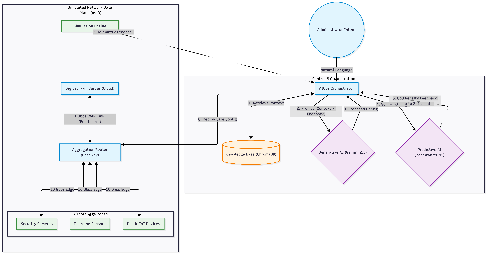
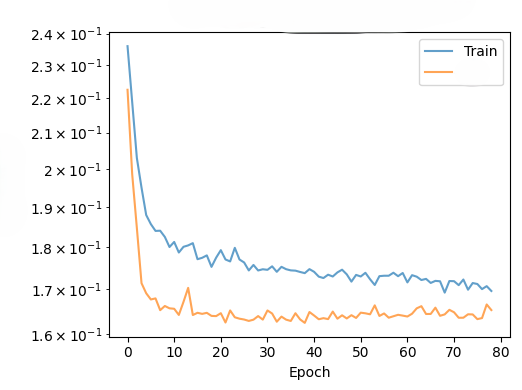
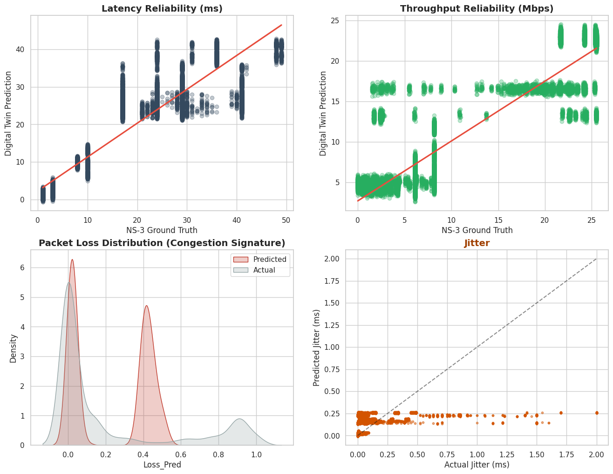

The Challenge: Securing Critical Infrastructure
Modern airport surveillance networks are highly critical infrastructures that face massive bandwidth constraints as they scale to support hundreds of high-definition cameras and IoT sensors. Traditional manual troubleshooting by network administrators is fundamentally reactive, relying on static CLI interventions that are often too slow, risking critical video feed loss during congestion events.
Our Solution: We built a distributed, generative Digital Twin—a high-fidelity virtual replica of the airport's network. By combining Graph Neural Networks (GNNs) for rapid performance prediction with a Large Language Model (LLM) utilizing Retrieval-Augmented Generation (RAG), administrators can now manage complex camera networks using simple, natural language commands. Before any AI-generated JSON configuration is deployed, the GNN acts as a strict mathematical guardrail to pre-verify that the changes are physically safe.
System Architecture & Methodology
Our system operates in a continuous, closed-loop cycle consisting of three core technological pillars designed to bridge the gap between natural language intents and strict network physics:
1. High-Fidelity Data Plane
We utilized the ns-3 discrete-event simulator to create a realistic physical baseline, generating 1,000 unique scenarios. This data captures continuous UDP datagrams, bursty TCP background traffic, hardware failures, and weather-induced edge degradations.
2. Predictive AI (ZoneAwareGNN)
Our custom Graph Attention Network (GATv2) formulates the network state as a directed graph. Utilizing 4 independent attention heads and a 128-dimensional latent space, it predicts continuous Quality of Service (QoS) metrics like latency, jitter, throughput, and packet loss.
3. Generative AIOps Pipeline
A ChromaDB vector database stores 7,004 embedded historical network states. When an administrator issues a command, the Gemini 2.5 Flash-Lite LLM retrieves this context to autonomously synthesize and iteratively evaluate safe JSON configurations.

Experiment Setup & Topology
The physical network was modeled using a hierarchical topology representing an airport's edge-to-cloud infrastructure. It comprises 52 specialized nodes: 50 high-definition endpoint cameras uniformly distributed across five operational zones, sending data through an aggregation core gateway multiplexer to a central Cloud/NOC server.
To accurately simulate congestion and force network bottlenecks, intra-airport Edge-to-Core links were over-provisioned at 10 Gbps, while the critical Core-to-Cloud WAN link was strictly bottlenecked at 1 Gbps using an Active Queue Management (AQM) CoDel algorithm. The entire architecture was deployed as a distributed microservices environment using FastAPI, strictly separating the heavy C++ ns-3 simulation engine from the PyTorch inference servers to ensure rapid, enterprise-grade scalability.
Results and Analysis
Our digital twin successfully distills days of complex packet-level physics into a neural network capable of performing predictive evaluations in mere milliseconds. The multi-task regression model achieved stable convergence across 80 epochs, utilizing a custom weighted Mean Squared Error (MSE) loss function to balance highly varied metric scales.


Key Performance Metrics
- Critical Congestion Recall: The GNN successfully flagged 100.00% of critical congestion states (>15.0% packet loss), ensuring the AI orchestrator is always invoked before video feeds drop.
- Ultra-Low Latency Inference: A single forward-pass inference request to the PyTorch GNN averages just 28.1 ms, while ChromaDB context retrieval averages 42.5 ms.
- Rapid Incident Response: The total operational latency—from a user typing a natural language command to the AI generating, verifying, and deploying a safe network configuration—averages just 4.2 seconds.
- Optimization Efficiency: The LLM's cognitive evaluator loop reaches a mathematically stable termination decision in an average of 2.4 iterations.
- Jitter Prediction Accuracy: Despite the chaotic micro-bursts of simulated TCP traffic, absolute error for network jitter remained highly bounded at just 0.056 ms.
Project Team & Supervisors
Meet the engineers and academics behind the Generative Digital Twin Framework.
Project Links & Resources
Explore our code repository and departmental links below.